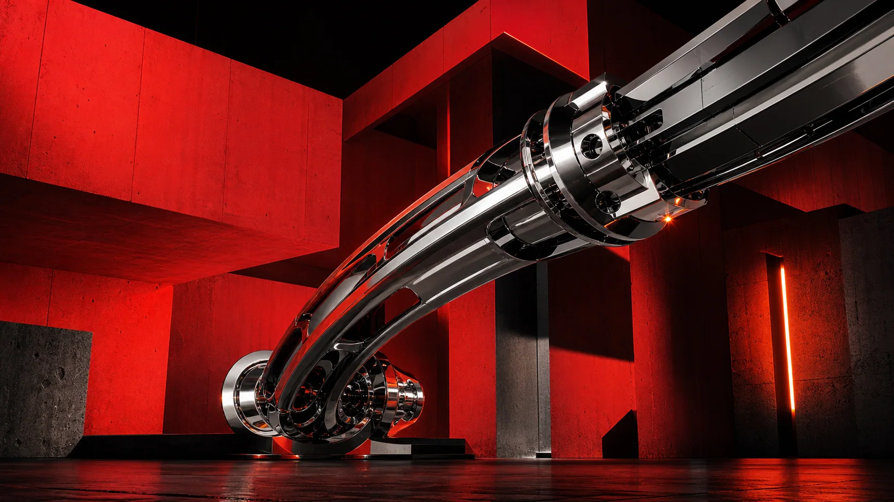
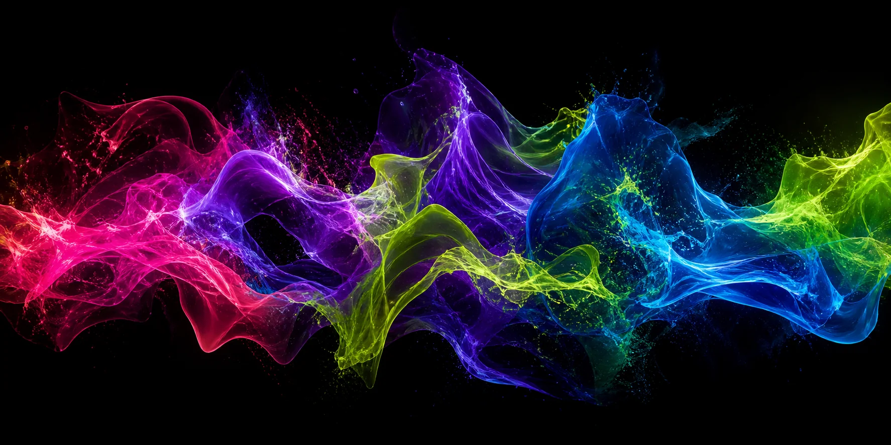

01
01Digital natural history
Lumen Archive
Bioluminescence, orbital particles, living specimens.
Enter ↗A study in digital range
An original collection of art-directed, interactive websites—each built as a different argument for what the web can feel like.
01Bioluminescence, orbital particles, living specimens.
Enter ↗
02Industrial tension, magnetic type, controlled impact.
Enter ↗ 03
03Editorial calm, fluid masks, time measured in tides.
Enter ↗
04Audio-reactive canvas, touch synthesis, liquid color.
Enter ↗ 05
05Spatial menus, edible planets, gravity with flavor.
Enter ↗